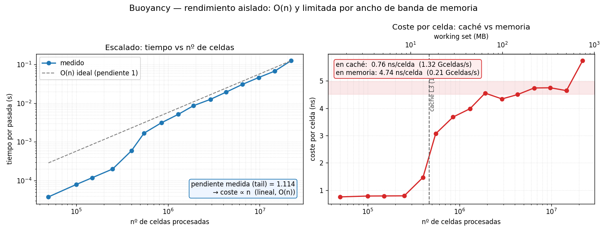

testing-lab · operación 1 de 5
Buoyancy (flotabilidad)
El calor del gas se convierte en empuje vertical. Aislada, es una operación O(n) y limitada por el ancho de banda de memoria: barata, predecible, y el suelo contra el que compararemos las operaciones caras.
Qué hace la función
La función real del motor es
aplicarBuoyancy
(engine/buoyancy.h). Recorre el grid y, solo en las celdas
de gas (BURNING o SMOKE), añade una fuerza vertical
a la velocidad:
En el estado actual del motor density es un campo muerto
(vale 0 — lo confirmó la propia sonda de presión del lab, issue #136), así
que el término B · density no aporta nada y la operación se reduce
a una ley lineal: velocity.z += A · temperature.
Es la operación más sencilla del motor: por celda, una multiplicación, una
resta y una suma.
Gráfico 1 — comportamiento físico
La sonda probe_buoyancy mete un blob gaussiano de calor en un
cuadrante 50×50×20, marca como gas las celdas calientes, llama a
aplicarBuoyancy y vuelca un corte vertical (plano x–z
por el centro). El driver lo dibuja como dos mapas de calor: la temperatura de
entrada y la velocidad vertical de salida.

tests/test_buoyancy.py, que
comprueba vz == A·temperature celda a celda.
Gráfico 2 — rendimiento (curva de escalado O(n))
El motor en producción está limitado por cuántos cuadrantes activos procesa
por tick. Pero la función aislada no tiene ese límite: desde la sonda le
metemos un working set creciente de cuadrantes (todas las celdas como
gas, carga máxima) y cronometramos en C++ con std::chrono,
autocalibrando las repeticiones para que cada medida sea estable.

Dos cosas:
- Es O(n). El tiempo crece en proporción directa al nº de celdas (pendiente medida ≈ 1 en log-log). No hay sorpresas algorítmicas: doblar las celdas dobla el tiempo.
- El cuello de botella es la memoria, no el cálculo.
Mientras el working set cabe en la caché L3, el coste es de
~0.7 ns/celda; al superar los 16 MiB se multiplica por ~7 hasta
~5 ns/celda y se queda plano. La aritmética (un multiplicar y dos
sumar) es gratis; lo que cuesta es traer cada
Celdade la RAM.
Traducción a términos del motor
Un cuadrante son 50×50×20 = 50 000 celdas (1.8 MB). Aplicando el coste medido:
| Régimen | ns/celda | por cuadrante | cuadrantes / frame 60 FPS |
|---|---|---|---|
| Un cuadrante aislado (cabe en caché) | ≈ 0.7 | ≈ 0.04 ms | ≈ 460 |
| Muchos activos (memory-bound) | ≈ 5 | ≈ 0.25 ms | ≈ 66 |
Como un puñado de cuadrantes activos ya rebasa la L3, en una simulación cargada el régimen real es el memory-bound: ~0.25 ms por cuadrante. Aun así, ~66 cuadrantes por frame de 16.6 ms con una sola operación que, además, en la práctica trabaja solo sobre la fracción de celdas que son gas (no el 100% del peor caso medido aquí). La buoyancy nunca será el cuello de botella — ese sitio se lo lleva el solver de presión, que mediremos después.
Cómo reproducir
# 1) Compilar las sondas (incluye el benchmark)
bash testing-lab/build.sh
# 2) Gráfico de comportamiento físico → out/buoyancy.png
testing-lab/.venv/bin/python testing-lab/experiments/buoyancy.py
# 3) Gráfico de rendimiento O(n) → out/buoyancy_bench.png
testing-lab/.venv/bin/python testing-lab/experiments/buoyancy_bench.py
# 4) Test de cordura del invariante físico (vz == A·temp)
testing-lab/.venv/bin/python testing-lab/tests/test_buoyancy.py